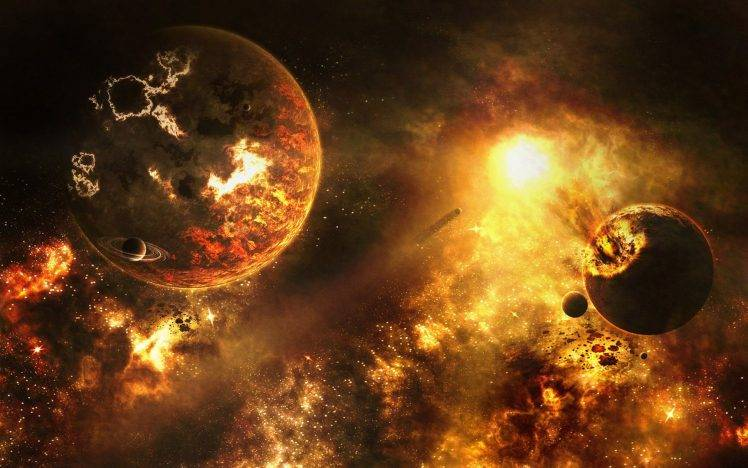
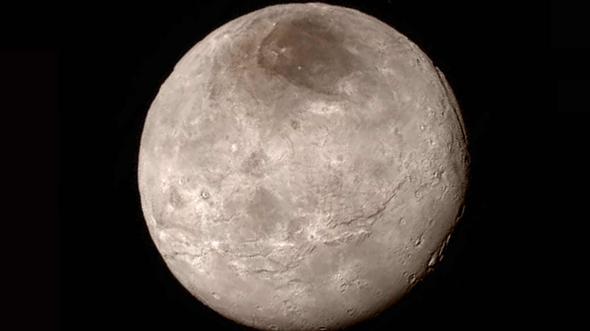
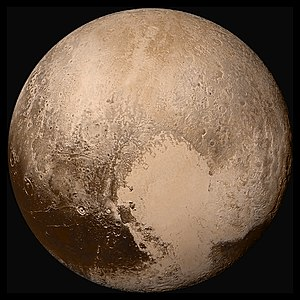
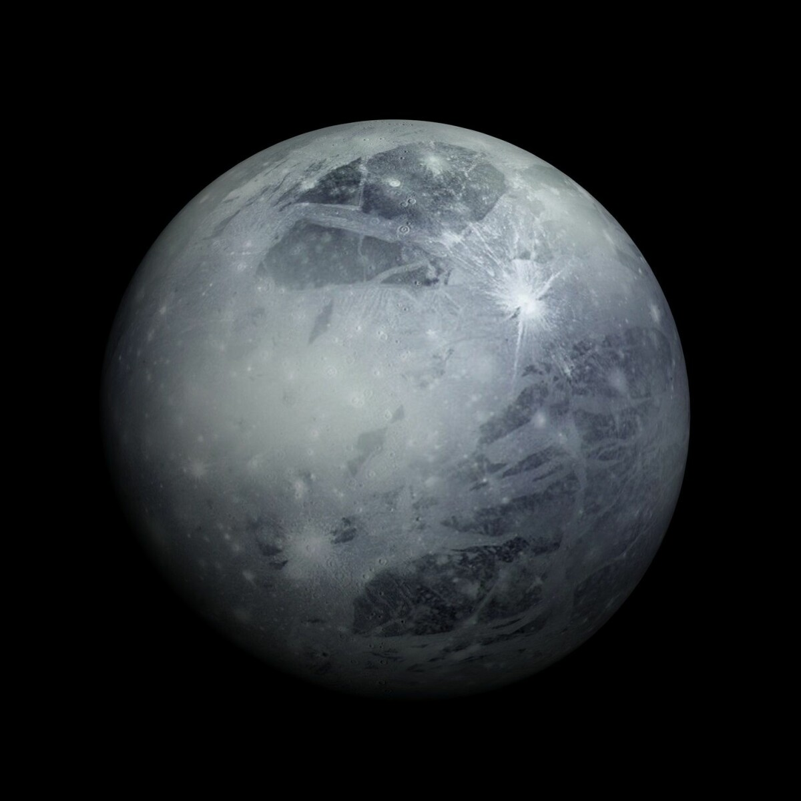

เอกภพ (universe) คืออะไร มาจากไหน กำเนิดมาอย่างไร กำเนิดมานานเท่าใดแล้ว เป็นเรื่องที่มนุษย์อยากทราบและค้นคว้าหาคำตอบ ณ ปัจจุบันมีหลักฐานที่แสดงว่าเอกภพกำลังขยายใหญ่ขึ้นทุกวินาที หากเราสามารถย้อนเวลากลับไปในอดีต ก็จะไปถึงจุดๆ หนึ่งที่เป็นจุดเริ่มต้นของเอกภพที่เรียกว่า บิกแบง (Big Bang) และถ้านักดาราศาสตร์คำนวณอัตราการขยายตัวของเอกภพได้ถูกต้องก็จะพบว่าเอกภพกำเนิดมาแล้วเมื่อประมาณ 13,700 ล้านปี
กำเนิดเอกภพเริ่มนับจากจุดที่เรียกว่า " บิกแบง (BigBang) " บิกแบง เป็นชื่อที่ใช้เรียกทฤษฎีกำเนิดเอกภพทฤษฎีหนึ่ง ปัจจุบันบิกแบงเป็นที่ยอมรับมากขึ้น เพราะมีปรากฏการณ์หลายอย่างที่สอดคล้อง หรือเป็นไปตามทฤษฎีบิกแบง ก่อนการเกิดบิกแบง เอกภพเป็นพลังงานล้วนๆ ภายใต้อุณหภูมิที่สูงยิ่ง จุดบิกแบงจึงเป็นจุดที่พลังงานเริ่มเปลี่ยนเป็นสสารครั้งแรก เป็นจุดเริ่มต้นของเวลาและเอกภพ
ปัจจุบันเอกภพประกอบด้วยกาแล็กซีจำนวนเป็นแสนล้านแห่ง ระหว่างกาแล็กซีเป็นอวกาศที่เวิ้งว้างกว้างไกล เอกภพจึงมีขนาดใหญ่มาก โดยมีรัศมีไม่น้อยกว่า 15,000 ล้านปีแสง และมีอายุประมาณ 15,000 ล้านปีแสง ภายในกาแล็กซีแต่ละแห่งประกอบด้วยดาวฤกษ์จำนวนมาก รวมทั้งแหล่งกำเนิดดาวฤกษ์ที่เรียกว่า เนบิวลา และที่ว่าง โลกของเราเป็นดาวเคราะห์ดวงหนึ่งในระบบสุริยะ ซึ่งเป็นสมาชิกหนึ่งของกาแล็กซีของเรา
บิกแบงเป็นทฤษฎีที่อธิบายถึงการระเบิดใหญ่ที่ทำให้พลังงานส่วนหนึ่งเปลี่ยนเป็นเนื้อสาร มีวิวัฒนาการต่อเนื่องจนเกิดเป็นกาแล็กซี เนบิวลา ดาวฤกษ์ ระบบสุริยะ โลก ดวงจันทร์ มนุษย์ และสิ่งมีชีวิตต่างๆ ขณะเกิดบิกแบง มีเนื้อสารเกิดขึ้นในรูปของอนุภาคพื้นฐานชื่อ ควาร์ก (Quark) อิเล็กตรอน (Electron) นิวทริโน (Neutrino) และโฟตอน (Photon) ซึ่งเป็นพลังงาน เมื่อเกิดอนุภาคก็จะเกิดปฏิอนุภาค (Anti-particle) ที่มีประจุไฟฟ้าตรงกันข้าม ยกเว้นนิวทริโนและแอนตินิวทริโน ไม่มีประจุไฟฟ้า เมื่อปฏิอนุภาคพบกับอนุภาคชนิดเดียวกัน จะหลอมรวมกันเนื้อสารเปลี่ยนไปเป็นพลังงานจนหมดสิ้น ถ้าเอกภพมีจำนวนอนุภาคเท่ากับปฏิอนุภาคพอดี เมื่อพบกันจะกลายเป็นพลังงานทั้งหมด ก็จะไม่เกิดกาแล็กซี ดาวฤกษ์และระบบสุริยะ โชคดีที่ในธรรมชาติ มีอนุภาคมากกว่าปฏิอนุภาค ดังนั้นเมื่อปฏิอนุภาคพบอนุภาค นอกจากจะได้พลังงานเกิดขึ้นแล้ว ยังมีอนุภาคเหลืออยู่ และนี่คืออนุภาคก่อกำเนิดเป็นสสารของเอกภพในปัจจุบัน
หลังบิกแบงเพียง 10-6 วินาที อุณหภูมิของเอกภพลดลงเป็นสิบล้านล้านเคลวิน ทำให้ควาร์กเกิดการรวมตัวกันเป็นโปรตอน (นิวเคลียสของไฮโดรเจน) และนิวตรอน หลังบิกแบง 3 นาที อุณหภูมิของเอกภพลดลงเป็นร้อยล้านเคลวิน มีผลให้โปรตรตอนและนิวตรอนเกิดการรวมตัวเป็นนิวเคลียสของฮีเลียม ในช่วงแรกๆนี้ เอกภพขยายตัวอย่างเร็วมาก
หลังบิกแบง 300,000 ปี อุณหภูมิลดลงเหลือ 10,000 เคลวิน นิวเคลียสของไฮโดรเจนและฮีเลียมดึงอิเล็กตรอนเข้ามาอยู่ในวงโคจร เกิดเป็นอะตอมไฮโดรเจนและฮีเลียมตามลำดับ กาแล็กซีต่างๆ เกิดหลักบิกแบงอย่างน้อย 1,000 ล้านปี ภายในกาแล็กซีมีธาตุไฮโดรเจนและฮีเลียมเป็นสารเบื้องต้นซึ่งก่อกำเนิดเป็นดาวฤกษ์รุ่นแรกๆ ส่วนธาตุต่างๆที่มีมวลมากกว่าฮีเลียมเกิดจากดาวฤกษ์ขนาดใหญ่
หลักฐานการเกิดบิกแบง
1. การเลื่อนไปทางแดงของสเปกตรัมกาแล็กซี
การเลื่อนไปทางแดงของสเปกตรัม (Redshift) ของกาแล็กซีที่อยู่ห่างไกลบ่งชี้ว่าเอกภพกำลังขยายตัว หากเราพิจารณาเอกภพโดยให้เวลาย้อนกลับไปนานพอ ทุกสรรพสิ่งในเอกภพจะถูกบีบอัดอยู่ที่จุดๆเดียว และการระเบิดที่เกิดขึ้นอย่างรวดเร็วในจุดๆนี้คือ “บิ๊กแบง”
2. รังสีไมโครเวฟพื้นหลัง
เอกภพในช่วงแรกๆจะร้อนมาก พอเอกภพขยายตัว ความร้อนนี้จะเหลือเพียง“แสงเรือง” ที่มีอยู่ทั่วเอกภพ ทฤษฎีบิ๊กแบงไม่เพียงแต่จะทำนายถึงแสงเรืองดังกล่าวเท่านั้น แต่กล่าวว่า “แสงเรือง” นี้ควรเป็นรังสีอินฟราเรด ซึ่งเป็นส่วนหนึ่งของสเปกตรัมคลื่นแม่เหล็กไฟฟ้า
“แสงเรือง” นี้จะเรียกว่า “รังสีไมโครเวฟพื้นพลังจักรวาล” (Cosmic Microwave Background: CMB) ซึ่งถูกตรวจวัดได้อย่างแม่ยำโดยตัวตรวจวัดที่โคจรอยู่รอบโลก และเป็นหลักฐานชั้นดีที่ยืนยันทฤษฎีบิ๊กแบง
3. ธาตุต่างๆในเอกภพ
ธาตุต่างๆส่วนหนึ่งที่เราพบได้ในปัจจุบัน เกิดขึ้นในช่วงที่เอกภพขยายตัวและเย็นตัวลง ทฤษฎีบิ๊กแบงทำนายว่าธาตุต่างๆเหล่านี้ควรจะถูกสังเคราะห์ขึ้นในช่วงที่เอกภพมีอายุน้อย และได้กลายมาเป็นกาแล็กซีที่อยู่ห่างไกลและดาวฤกษ์อายุมากที่เราเห็นกัน
คุณไม่สามารถพิจารณาดาวฤกษ์รุ่นหลังๆอย่างดวงอาทิตย์เป็นหลักฐานการเกิดบิ๊กแบงได้ เนื่องจากดาวฤกษ์รุ่นหลังๆมีธาตุที่ได้จากการสังเคราะห์ภายในดาวฤกษ์รุ่นก่อนหน้านี้ ส่งผลให้ดาวฤกษ์รุ่นหลังๆมีองค์ประกอบทางเคมีที่แตกต่างไปจากดาวฤกษ์ที่อยู่ในช่วง 7 พันล้านปีก่อน (ดาวฤกษ์รุ่นก่อนหน้า)
4. การมองเห็นย้อนกลับไปยังอดีต

ยังมีทฤษฎีอื่นเกี่ยวกับเอกภพนอกจากทฤษฎีบิ๊กแบงอย่าง “ทฤษฎีสถานะคงที่” (Steady State Theory) ซึ่งกล่าวว่าเอกภพจะไม่เปลี่ยนแปลงมากนักเมื่อเวลาผ่านไป
แต่เนื่องจากแสงต้องใช้เวลานานในการเดินทางไปในเอกภพ เมื่อเรามองกาแล็กซีที่อยู่ห่างไกล เราจะกำลังมองเห็นภาพของมันในอดีตอยู่
จากการสังเกตการณ์จะสามารถเห็นได้ว่ากาแล็กซีในอดีตนานแล้ว จะค่อนข้างแตกต่างจากกาแล็กซีในปัจจุบัน แสดงว่าเอกภพมีความเปลี่ยนแปลง ซึ่งสอดคล้องกับทฤษฎีบิ๊กแบงมากกว่าทฤษฎีสถานะคงที่